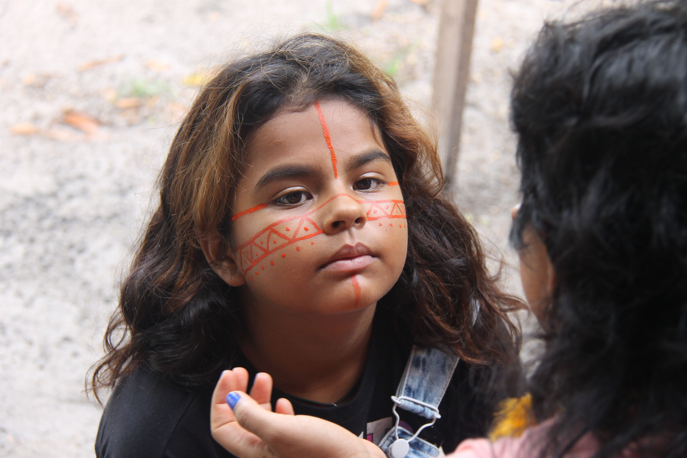

Instituições parceiras
Veja como escolas, faculdades e equipes parceiras podem organizar materiais e acompanhar pedidos.
Conhecer instituiçõesEducação básica e ensino superior
Um espaço para estudantes indígenas encontrarem materiais de estudo e pedirem apoio ao longo da educação básica e do ensino superior.

Veja como escolas, faculdades e equipes parceiras podem organizar materiais e acompanhar pedidos.
Conhecer instituiçõesVeja as atividades disponíveis para leitura no site.
Ver materiaisRegistre uma necessidade e use o protocolo para acompanhar a resposta.
Registrar pedido